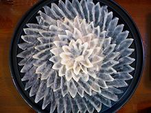
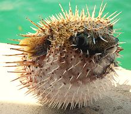

A family of fish that puff up to several times their normal size when threatened, common in tropical seas, particularly near reefs. Fugu is considered a great delicacy in Japan (and Korea) where it is extremely expensive and served raw in highly decorative arrangements. It's prepared only by trained and licensed fugu chefs - because the eyes and internals are so toxic one fish can kill 30 people.
Non-toxic fugu can be farm raised because they don't make the poison themselves, they have to consume certain bacteria to do it. Non-toxic fugu has generated little interest - without the risk of death it's just another fish. Puffers have long been eaten in Florida but are now banned taken from some waters due to a different bacterial toxin. Fugu is not considered threatened but is not generally marketed in North America. Photo by Chris 73 distuributed under license Creative Commons Attribution-Share Alike v3.0 Unported.
More on Varieties of Fish
(very large page).
 A plate of fugu sashimi. When you're paying that kind of money you get some pretty fancy presentations. Photo distuributed under license Creative Commons Attribution-Share Alike v3.0.

The most familiar puffer fish, Diodon holocanthus, is sometimes
used to prepare fugu dishes.
Photo by Ibrahim Iujaz distributed under license
Creative Commons
Attribution v2.0 Generic.